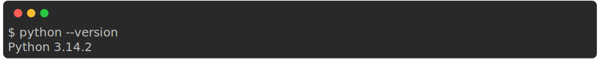
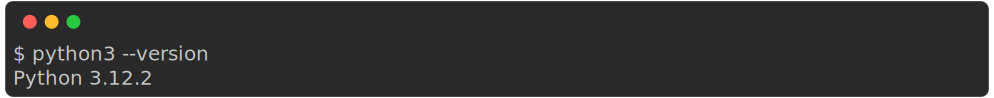
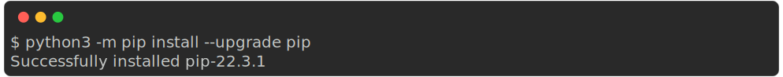
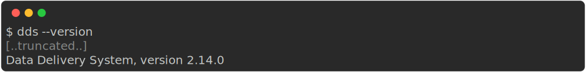
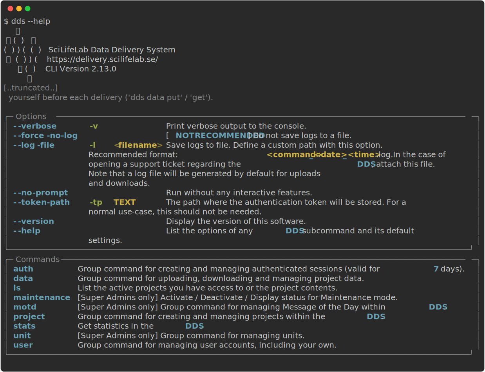

Installation guide¶
You can install dds-cli in two different ways:
From PyPI. Independent on operating system (OS), we recommend this option. Note that this does not apply to Uppmax.
Via executables. These are located in the latest release on GitHub.
Note
The executables are only available for Ubuntu, MacOS and Windows.
If you want to request an executable for another OS, please contact us at delivery@scilifelab.se. Start the subject line with “Feature Request”.
The following sections describe the installation process on MacOS / Linux and Windows, and how to load dds-cli on Uppmax.
Note that the sections describing installation from PyPI are focused on the install command, and do not provide a guide on how to verify the package integrity with checksums. Instructions on how to do this can be found at the bottom of this page.
MacOS / Linux¶
As mentioned above, you can install dds-cli from PyPI or via an executable.
Install from PyPI¶
To perform these steps you need to have Python version 3.7 or higher installed.
First check which Python version you have
If this displays
Python 2.7, runpython3 --versioninstead.If this does not return
Python 3.7.xor higher, you will need to install Python.
Warning
Make sure you have the latest version of pip.
python3 -m pip install --upgrade pip
The DDS CLI is available on PyPI. To install the DDS CLI, run this command in the terminal:
$ pip install --upgrade dds-cli
Once the installation has finished, test that the CLI has been installed correctly by verifying the version:
$ dds --version
The output should be the following:

Install via the executable¶
Download the executable from the GitHub release page:
Executable for Linux (Ubuntu latest): Download Linux Executable
You can find executables for other versions on the GitHub releases page linked at the top of this page.
Executable for MacOS: Download MacOS Executable
Open the terminal, go to the directory where the downloaded file is located, and make the file executable by running the following command:
On Linux:
$ chmod +x dds-cli_ubuntu_x86_64
On MacOS:
$ chmod +x dds-cli_macos_x86_64
Test that the
dds-clicommand works by running the following:$ ./<name-of-executable-file>Example:

Information to MacOS users
On MacOS, you may need to allow your Mac to trust the software. Please, refer to the following sources for more information: https://support.apple.com/en-us/HT202491 and https://support.apple.com/guide/mac-help/open-a-mac-app-from-an-unidentified-developer-mh40616/mac
When reading through the rest of the documentation and running the commands, replace
ddswith the path to the executable. For example:$ ./dds_cli_macos_x86_64 auth login $ ./dds_cli_macos_x86_64 user info $ ./dds_cli_macos_x86_64 ls ...
Windows¶
Install from PyPI¶
Detailed instructions on how install the DDS CLI on Windows here.
Install via the executable¶
Download the executable from the GitHub release page: Download
Open the Powershell
Click on
Start(Windows symbol in corner)Type “Powershell” or “Command Prompt” (Powershell recommended)
Click on the Powershell or Command Prompt symbol
Open the file explorer and navigate to the location of the downloaded executable.
Drag the executable into the Powershell/Command Prompt window and press enter. This should result in the help text being displayed.
Note
You may need to change the permissions regarding executables and allow your laptop to trust the software.
When reading through the rest of the documentation and running the commands, replace
ddswith the path to the executable. If you press the up arrow you will see the previous command which will reveal the exact path on you computer.
Uppmax¶
The dds-cli package is a global module on Uppmax; No installation required. However, there are a few steps you need to perform prior to using it. These steps differ between Rackham and Bianca.
Note
When there is a new version of dds-cli, Uppmax upgrades the version automatically the following day.
Rackham¶
Warning
Do not deliver sensitive data to Rackham.
SSH into Rackham
ssh -AX <username>@rackham.uppmax.uu.se
Load the
bioinfo-toolsmodule anddds-climl bioinfo-tools dds-cli
Run
dds --help. The output should look like this:
Rackham user guide
A detailed user guide for Rackham can be found here: https://www.uppmax.uu.se/support/user-guides/rackham-user-guide/
Bianca¶
Terminology in this section
SENS project /
<SENS-project>: The active SNIC SENS research project on the Bianca cluster at Uppmax. Not a DDS delivery project.DDS project /
<DDS-project>: The active DDS delivery project you want to upload data to / download data from or manage.
Important
For downloading data to a SENS project on Bianca, you need to connect to a server called Transit, and not to your SENS project cluster.
Mount the correct SENS project on transit
You need to have enough space on the nobackup storage allocation in the corresponding SENS project. If the data you are trying to download is larger than the allocated space, the download will fail.
If your data is larger than a few hundreds of GB: start the download in a screen/tmux session
SSH into transit
$ ssh -A <username>@transit.uppmax.uu.se
You will get into the home directory.
Danger
Any files that are created here are not persistent; If you download data from DDS to this directory, your data will be deleted as soon as you exit the session.
Mount your specific SENS project directory on transit
<username>@transit:~$ mount_wharf <SENS-project>
Download the data
Danger
You must use the
--destinationoption. If you do not, the data will end up in your home directory and will be deleted when your ssh session ends.Either specify a file or directory with
--source, or download the full project contents with--get-all.Examples:
Download everything in DDS project:
$ dds data get --project <DDS-project> --get-all --destination <SENS-project>/<directory>/Download one or more files or directories:
$ dds data get --project <DDS-project> --source <file or directory in DDS project> --destination <SENS-project>/<directory>/Note
<directory>should be a non-existent directory where you would like your data to be located after download.The downloaded data ends up in a non-backed up storage on Bianca.
Bianca- and Transit user guides
Bianca user guide: https://www.uppmax.uu.se/support/user-guides/bianca-user-guide/
Transit user guide: https://www.uppmax.uu.se/support/user-guides/transit-user-guide/
Verify the package integrity prior to installing it¶
This installation guide is for those that want to verify that the dds-cli package published on PyPI is identical to the one you install locally, thereby catching potential (albeit unlikely) corruptions in the package prior to running the installation. Note that the hashes used to verify this are generated by PyPI itself, not by the Data Centre.
Open the terminal
Download the
dds-clipackage by running# "--dest dds-downloaded" tells pip to put the downloaded files in the directory "dds-downloaded" pip download dds-cli --dest dds-downloaded
Generate hash for the dds-cli file by running
# <VERSION> should be replaced by the version you have downloaded from PyPI. When in doubt, simply type dds-downloaded/dds_cli and press tab; The path to the file will be filled in automatically. pip hash dds-downloaded/dds_cli-<VERSION>-py3-none-any.whl # Example output: # dds_cli-<VERSION>-py3-none-any.whl: # --hash=sha256:8ba6495b73d759e96c35652273cf4e4158acba02f1cf64f012cc67cf2e346cae
Open a browser and go to the PyPI “Download files” page
In the “Built Distribution” section, click “view hashes”
Copy the Hash digest for the SHA256 Algorithm
In the terminal, verify that the copied hash (step 4) matches the generated hash (step 3) by running
if [ "<correct hash from step 4>" = "<generated hash from step 3>" ]; then echo "Package integrity verified"; else echo "Package compromised!"; fi
If this prints out “Package integrity verified”, continue to step 6. If it does not, the downloaded
dds-clipackage is compromised and you should not perform step 6. Delete the downloaded directorydds-downloadedand start from step 1 again.Install the
dds-clitool by runningpip install dds-downloaded/dds_cli-<VERSION>-py3-none-any.whl
Once the installation has finished, test that the CLI has been installed correctly by verifying the version:
$ dds --version
The output should be the following: